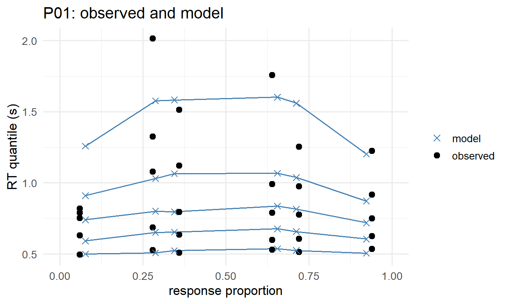
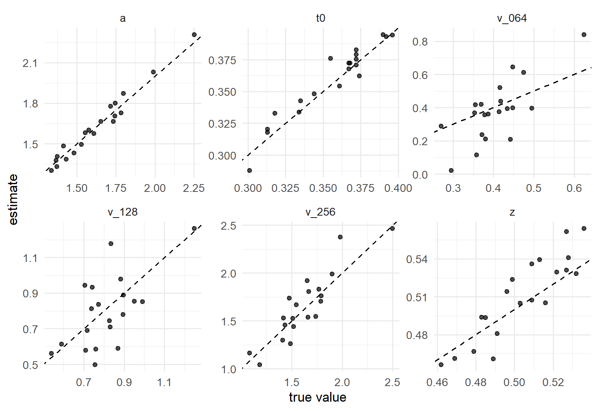

6 Checking A Fit
A fit always returns numbers. This chapter asks two questions before trusting them:
- Does the fitted model describe the data? Simulate data from the fitted values and compare them with the real data.
- Can the fitting recover known values? Fit data whose true values are known and compare the estimates with the truth.
rdm <- read_csv("data/rdm.csv", show_col_types = FALSE) |>
mutate(upper = response == "right")
truth <- read_csv("data/rdm_truth.csv", show_col_types = FALSE)
p01 <- rdm |> filter(participant == "P01", instruction == "accuracy")
set.seed(1)
fit_p01 <- fit_rdm(p01) # fit_rdm() from "Fitting the Model", saved in R/ddm_functions.R6.1 Simulating Data From A Fit
To simulate data from a set of parameter values we need a way to draw responses and RTs from the model. The step-by-step simulator of Chapter 2 works, but is slow. A faster way uses the density directly:
- divide time into narrow bins (half a millisecond wide);
- use
ddm_density()to get the probability of each response in each bin; - draw bins at random with those probabilities.
This is sampling from the distribution the formula describes, so it needs no time steps
and no paths. ddm_sample() in R/ddm_functions.R does this, with one set of parameter
values per trial:
sim <- ddm_sample(v = rep(1, 5), a = 1.2, z = 0.5, t0 = 0.3)
sim| upper | rt |
|---|---|
| FALSE | 0.402 |
| TRUE | 0.684 |
| TRUE | 1.111 |
| TRUE | 0.442 |
| TRUE | 0.495 |
6.2 Does The Model Describe The Data?
We simulate P01's 300 trials twenty times from the fitted values and compare the simulated data with the real data on two features:
- how often each response was correct, at each coherence level;
- the shape of the RT distribution, summarised by the 0.1, 0.3, 0.5, 0.7 and 0.9 RT quantiles, for correct responses and errors separately.
# Simulate the same trials n_rep times from a set of fitted values
simulate_from_fit <- function(par, data, n_rep = 20) {
map_dfr(seq_len(n_rep), function(r) {
v <- make_drift(par[4:6], data$coherence, data$direction)
s <- ddm_sample(v, par[["a"]], par[["z"]], par[["t0"]])
tibble(coherence = data$coherence, direction = data$direction, upper = s$upper, rt = s$rt)
}) |>
mutate(correct = as.integer(upper == (direction == "right")))
}
# For each coherence level and correct/error: how often, and the RT quantiles
summarise_cells <- function(d) {
d |>
group_by(coherence) |>
mutate(n_coherence = n()) |>
group_by(coherence, correct) |>
reframe(prop = n() / first(n_coherence),
quantile = c(0.1, 0.3, 0.5, 0.7, 0.9),
rt = quantile(rt, quantile))
}
set.seed(2)
cells <- bind_rows(
observed = summarise_cells(p01),
model = summarise_cells(simulate_from_fit(fit_p01$par, p01)),
.id = "source"
)
head(cells)| source | coherence | correct | prop | quantile | rt |
|---|---|---|---|---|---|
| observed | 0.064 | 0 | 0.36 | 0.1 | 0.507 |
| observed | 0.064 | 0 | 0.36 | 0.3 | 0.634 |
| observed | 0.064 | 0 | 0.36 | 0.5 | 0.793 |
| observed | 0.064 | 0 | 0.36 | 0.7 | 1.120 |
| observed | 0.064 | 0 | 0.36 | 0.9 | 1.513 |
| observed | 0.064 | 1 | 0.64 | 0.1 | 0.528 |
ggplot(cells, aes(x = prop, y = rt)) +
geom_line(data = filter(cells, source == "model"), aes(group = quantile), colour = "steelblue") +
geom_point(aes(shape = source, colour = source), size = 2.5) +
scale_shape_manual(values = c(model = 4, observed = 19)) +
scale_colour_manual(values = c(model = "steelblue", observed = "black")) +
coord_cartesian(xlim = c(0, 1)) +
labs(x = "response proportion", y = "RT quantile (s)", shape = NULL, colour = NULL,
title = "P01: observed and model")
This is a quantile-probability plot. Black dots are the observed data and blue crosses the model. Each column of points is one combination of coherence and correctness: the three columns on the right are correct responses (at 6.4%, 12.8% and 25.6% coherence, from left to right), and the three on the left are the matching errors. A column's horizontal position is how often that kind of response happened, and its five points are the RT quantiles, from fast (bottom) to slow (top).
The blue lines join the model's matching quantiles across the columns. Where the model's crosses fall on the observed dots, the model reproduces both how often and how fast each kind of response was made. The error columns are based on few trials (the fewer errors, the fewer RTs), so their upper quantiles are imprecise. A plot like this is better used to look for consistent patterns, such as errors being systematically slower than the model predicts, than to judge single points.
6.3 Can The Fitting Recover Known Values?
Parameter recovery asks: if the model is true, does fitting return the values that generated the data? Usually this is done by simulating data from a fit and refitting them. Here the data are already simulated, with known values, so fitting each of the 20 participants' accuracy blocks is itself a recovery study.
set.seed(3)
estimates <- rdm |>
filter(instruction == "accuracy") |>
nest(data = -participant) |>
mutate(par = map(data, \(d) fit_rdm(d, n_starts = 3)$par)) |>
unnest_wider(par) |>
select(-data) |>
pivot_longer(-participant, names_to = "parameter", values_to = "estimate")
true_values <- truth |>
transmute(participant, a = a_accuracy, z, t0,
v_064 = k * 0.064, v_128 = k * 0.128, v_256 = k * 0.256) |>
pivot_longer(-participant, names_to = "parameter", values_to = "true")
recovery <- left_join(estimates, true_values, by = c("participant", "parameter"))
recovery |>
group_by(parameter) |>
summarise(r = cor(true, estimate))| parameter | r |
|---|---|
| a | 0.984 |
| t0 | 0.960 |
| v_064 | 0.745 |
| v_128 | 0.635 |
| v_256 | 0.896 |
| z | 0.891 |
ggplot(recovery, aes(x = true, y = estimate)) +
geom_abline(linetype = "dashed") +
geom_point(alpha = 0.7) +
facet_wrap(~ parameter, scales = "free") +
labs(x = "true value", y = "estimate")
Each point is one participant, and the dashed line is where estimate equals truth. Correlations above .75 are usually described as good recovery and above .90 as excellent (White et al., 2018).
Here the boundary (\(r\) = 0.98), the non-decision time (0.96) and the drift at the highest coherence (0.9) are recovered well. The drifts at the two lower coherence levels are recovered less well (0.75 and 0.64). Each drift comes from only 100 trials, which gives it a standard error of about 0.13 (Chapter 5). That is large compared with how much the true drifts at those coherence levels differ between participants, so the estimates cannot sort people reliably even though they are centred on the right values. Chapter 7 improves this by estimating one drift scale for all three coherence levels. Recovery depends on the design: fewer trials, more parameters, or effects that change from trial to trial all make it worse, so it has to be checked again for every new design. Part 2 does this for a value-based task.
With real data, the true values are unknown. The usual recovery check is then to fit
each participant, simulate a new dataset from each fit with ddm_sample(), refit the
simulated data, and compare the refitted values with the values used to simulate them.